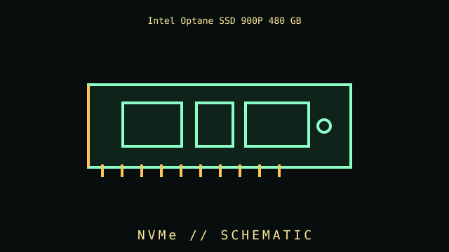

[ PCIE 3.0 NVME DRIVES // IDENTIFIED COMPONENT ]
Intel Optane SSD 900P 480 GB
PCIe NVMe 3D XPoint SSD, 2017. This file identifies a specific part or clearly bounded model family, rather than an overview of the category.

IDENTIFY THE REVISION: Check the complete product code, suffix, board revision, region, firmware, and date code. Similar names do not guarantee the same hardware.
Part specifications
| Catalog subcategory | PCIe 3.0 NVMe drives |
|---|---|
| Catalog identity | Intel Optane SSD 900P 480 GB |
| Generation / family | PCIe NVMe 3D XPoint SSD, 2017 |
| Architecture / ratings | PCIe 3.0 x4; NVMe; 480 GB add-in-card or U.2 variants; 3D XPoint low-latency media and high write endurance. |
| Interface / fit | AIC and U.2 form factors have different host connections; firmware/driver and physical slot fit vary. |
| Variants / field identification | 900P and 905P capacities/form factors differ; Optane is not NAND flash. |
| Evidence to collect | Photograph the nameplate and PCB labels; record test system, firmware, installed accessories, condition, and manual/datasheet revision used to verify specifications. |
Compatibility, care & service
- Check electrical signaling, pinout, voltage, current, connector, mounting and supported firmware before installation; do not rely on matching shapes alone.
- Inspect physical condition and manufacturer warnings; mains PSUs, CRTs, batteries and spinning media may retain hazardous energy or require specialist service.
- For vintage equipment, use the correct bus generation, BIOS, driver, media type, cable orientation and resource configuration documented for the machine.
- Record measured results separately from the manufacturer's published limits and state the setup and measurement conditions.
Model-specific notes
AIC and U.2 form factors have different host connections; firmware/driver and physical slot fit vary.
900P and 905P capacities/form factors differ; Optane is not NAND flash.
Sources & further reading
- Manufacturer / standards reference — Intel Optane SSD 900P 480 GBSource for product-family specifications; compare exact suffix, revision, and region with the unit label.
- Manufacturer / standards reference — Intel Optane SSD 900P 480 GBSource for product-family specifications; compare exact suffix, revision, and region with the unit label.
Links lead to manufacturer or standards references where available. If a source covers a family, use the exact model's manual as the final authority.